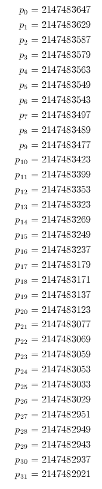

Send questions to Peter Alfeld at
annotate.class, appearance.class, cell.class, cellControl.class, choice.class, config.class, ct.class, dct.class, dctf.class, Dialog.class, facet.class, gen.class, hash.class, INT.class, line.class, matrix.class, ms.class, msf.class, prime.class, postscript.class, ps.class, RAT.class, refine.class, rmatrix.class, select.class, special.class, star.class, tv.class, vNames.class, wf.class.
Invoke the package with the Unix command java tv or its equivalent.
This will serve for most purposes. However, you can choose a
different (even non-prime) value of P. Click on the button
labeled Prime. This will bring up a
new panel showing a text field with the current value of P.
You can enter a new value in the text field or use the following
buttons:
All other buttons, menus, and text fields, will have an effect only
after the current calculation and any pending events have completed.
The button labeled Beep in the first
row of the control panel writes the character Control-G to standard
output. On most systems this causes an audible beep. This is useful
after initiating a lengthy calculation: your computer will beep when
the computation is done.
The button labeled Exit has the same
effect as Quit except that it causes the program to terminate
only after the current calculation and any pending events have
completed. Thus you can enter all the mouse clicks necessary to carry
out a certain calculation, and cause the program to terminate only
later, after the calculation completes. If you change your mind you
can undo the Exit click by clicking on Flush (as long as the
program has not terminated).
The button coords turns the index
display feature on and off. The button labeled dynamic switches between the two possible
locations of the indices (upper right corner or close to the domain
point). The domain point whose indices are being displayed can be
marked as the cursor moves around. The button Dps turns this feature on and off. The
display of the indices sometimes becomes corrupted, to clear the
screen (in this and other circumstances) hit the space bar.
Four formats for the indices are available. They are used for screen
display and for file output. Select them with the menu next to
the Button labeled coords.
Version Number and Status Label
The version number of the code is indicated in the top row of the
control panel. It increases whenever there are changes in this
software. Next to the version number the top row also contains a
status label that gives some information about the current state of
the spline space being investigated.

Residual Arithmetic
The code sets up a linear system with integer entries, and (usually)
analyzes it modulo a prime number P. Thus two integers are
considered equal if they have the same residual when divided by
P. In particular, an integer is considered to be equal to zero
if it is a multiple of P. By default,
It would in principle be possible to make the residual arithmetic
exact by exploiting the residuals modulo several prime numbers. In
particular one would have to use enough prime numbers so that their
product exceeds the largest possible determinant of any square matrix
of the integer system. A bound on such determinants is given by
Hadamard's bound which is evaluated and printed whenever the system is
analyzed exactly or its stability is examined, see below. The 2D software is able to use several prime
numbers simultaneously, at present such a facility is not available in
the 3D software.
Configurations
We use the word configuration for what
is otherwise and variously called "tetrahedral decomposition",
"tetrahedral decomposition", "tetrahedral" or "simplicial complex",
"three-dimensional triangulation", "tetrahedralization", etc:
A configuration is a finite set of non-degenerate tetrahedra
satisfying these conditions:
User's Guide
The trivariate code is under development and features will be added as
needed. Following is a list of major differences and similarities
between the 2D and the 3D packages:
Flushing, Stopping, and Quitting
The three buttons in the upper left corner of the control panel are
usually effective immediately, even if a possibly lengthy calculation is in
process. However, their effect may be delayed for actions that were initiated
from auxiliary panels.
The Stop Button on the Control Panel
and also the Macro panels interrupts a computation in progress. The
same effect can be obtained by typing 'x' in the drawing window. The
Quit Button exits the system
immediately. If used from an Applet the same effect can be obtained
by clicking on the Applet a second time. Typing 'X' in the drawing
window also works.
Events like mouse and button clicks are kept in an event queue and are
executed in the sequence they take place. You can flush the event
queue, and undo any pending mouse clicks you may have entered while
a calculation is taking place, by clicking on the button labeled Flush.
Available Configurations
The menu in the middle of the second line of the control panel lets
you select a configuration. The first item lets you import your own
configuration from a file (or URL). For details see the next section.
The following configurations are provided directly in the code:
Refining Configurations
Refining a configuration means dividing some of its tetrahedra into
subtetrahedra in such a way that a new configuration is obtained.
Existing vertices remain where they are, and new vertices are added.
At present, refining is possible only for regular configurations, and
not for general assembly.
To invoke the refinement panel click on the button
refine (at the left end of the third
row in the control panel). A new panel, the refinement panel, will
appear. Its controls are as follows:
Importing Configurations
Selecting the first item of the configuration menu, or clicking on the
import button next to the configuration menu, brings up a dialog
box that lets you enter a file name or a URL from which to read a
configuration. To use a file you will need to use the downloaded
version of the code. The browser version can only read a URL. Select
"file" or "www", enter the file or URL name, and click on "LOAD" or
"GET". LOAD will check the geometry of the imported file, GET will
omit that potentially lengthy check. I recommend you use LOAD as a
default, and, in any case, whenever importing a file for the first
time.
The data in the file are integers separated by spaces or commas,
with no blank lines, and the data written in lines as follows:
Example
The data file for the built-in Clough-Tocher split is
5 4
8 24 24
8 0 24
-8 12 12
0 12 0
2 12 15
1 2 3 4
0 2 3 4
0 1 3 4
0 1 2 4
Caution: Errors in the data file can
give rise to mysterious effects in the MDS code. Similar effects can
be caused by entering collections of tetrahedra whose union is not
homeomorphic to a ball. The code proceeds by checking smoothness
conditions across interior faces. Conditions along edges and at
points are contained in the face conditions. For example, the code is
unable to handle the case of just two tetrahedra sharing only an edge
or a vertex. If an improperly defined configuration is entered the
code may (or may not) detect that situation. If an anomalous
condition is detected the drawing window will appear gray. (It's a
gray area, because you may know what you are trying to do, but the
code may not behave as you expect or would like.)
To see the effect you can use the following data which define
two tetrahedra sharing a common edge:
6 2
0 1 0
0 0 0
1 0 0
1 1 0
0 0 1
1 1 1
0 1 2 4
0 2 3 5
Available Import Files
Currently, you can read or download the following files:
General Assembly
Usually the smoothness conditions analyzed by 3DMDS will be conditions
across faces that are shared by two tetrahedra. There is a limited
facility to examine more general configurations where tetrahedra may
share only edges or vertices.
To use this feature click on the button labeled "general" in the
second row of the control panel, next to the configuration selection
menu, or select "general assembly", the last item in that menu. A new
control window titled "general assembly" will appear. It controls a
tetrahedron T with vertices V0, V1, V2, and V3, that can have other
tetrahedra attached. You select those other tetrahedra by clicking on
the corresponding check boxes. For example, selecting F012 and V3
will generate a configuration of three tetrahedra, where one is
attached to T across the face F012, and another is attached just at
the vertex V3. The check boxes are linked. For example, selecting
edge E01 also selects vertices 0 and 1, and there will be only one
tetrahedron sharing edge E01. The Clear button resets all check
boxes. The button "After" creates the configuration with T present.
The button "Before" does the same with T absent. The "Initialize"
button initializes the linear algebra. It has the same effect as the
initialize button on the control panel. By clicking on "Before",
computing the dimension, then clicking on "After", and computing the
dimension (by clicking on "initialize"), you can compute the change
in the dimension y the kind of assembly your considering. You can
also compute the difference simply by clicking on "difference" in the
general assembly panel. Many of the ordinary controls work for the
general assembly step, but not all of them.
The menu on the general control panel let's you select from a set of
more complicated configurations. Currently these include:
Additional general configurations can be imported via the dialog box as
described in the previous section. Make sure you select "general file"
or "general" URL before loading the configuration.
General configurations can be assembled in the sequence in which the
tetrahedra are given to the software. This is specified for the built
in configurations, but you can download them, modify them, and import
them.
Pressing the button build on the
control panel writes a sequence of tetrahedra to standard output, and
lists how each is joined to the growing decomposition. Pressing
Bounds after pressing build computes upper and lower
bounds on the spline space and write those bounds to standard output.
Click here for a table of assembly steps.
Standard Output
The code provides information to standard output which is directed to
your terminal, or to the java console if the code is used via a
browser. That information includes data on the combinatorics and
geometry of the configuration, and of the system of smoothness
conditions. If a gray condition is present it contains information on
that condition, including any java
generated error messages.
Selecting Polynomial and Smoothness Degrees
This is analogous to the 2D software.
Display of Domain Point Indices
By default the indices of domain points are suppressed. However, they
can be displayed in the drawing window.
Pijkmn=(iV0 + jV1 + kV2 + mV3 + nV4)/d
Naturally, at most 4 of the subscripts can be non-zero.
1[12]22[3] means 100000000000022000
uvw
c
ijk
(in TeX notation)
where uvw are one to four vertices corresponding to non-zero
indices, and ijk are the corresponding indices. In place of having
indices for vertices, vertex names can be
used. Naming Vertices
Vertices can be named, for better comprehensibility, and for use in
written output. To invoke the feature click on the Button labeled
vtx names. The vertex name control
panel appears. You can set the name of each vertex, and the color in
which it is displayed in the drawing window. The button
Setit makes the new notation appear on the screen. In
stand alone mode the names of the vertices can be saved in a file and
restored from that file.
Selecting points for the minimal determining set.
(Left) clicking on a green point selects the point for inclusion in
the MDS. Clicking on a red point deselects that point. Clicking on a
blue or (small) black point has no effect (except possibly causing
initialization of the linear system).
Domain points may be selected in groups for inclusion or exclusion in
the MDS. Such groups may be associated with vertices, edges, faces,
or tetrahedra. A point is eligible if it is either included
in the growing MDS, or it is still available for inclusion. (Implied
points and inactive points are not eligible.) Eligible points are red
or green, and they must have been drawn. (They are unaffected by zooming,
however.) The following modes are available. Select them with the
menu at the beginning of the third row.
Rotating the Configuration
The right mouse button is used for rotating the configuration.
(Alternatively you can use the left button while keeping the Control
Button on your key board pressed.) Right click somewhere, keep the
button down, and drag the mouse. You will see an outline of the
configuration following your mouse movements. Releasing the mouse
button will cause a full new picture to be drawn. Right clicking
without mouse movement causes a display of the outline which may be
useful for reminding yourself of the underlying geometry. The initial
view of the configuration can be restored by pressing on the button
labeled identity. (The underlying
rotation matrix becomes the identity matrix.)
Zooming In and Out
The middle mouse button is the zoom button. (Alternatively, you can
use the left button while keeping the shift button on your key
board down.) To zoom in on a rectangular part of the drawing click on
a corner of the rectangle, keep the middle button down, drag the mouse
to the diagonally opposite corner, and release the button. To zoom
out double click the middle button anywhere in the drawing window. To
show the entire configuration in the drawing window click on size in the Control Panel.
Displaying Domain Points and Tetrahedra Selectively
Clicking on the Button selections
brings up a new Panel, The Selection Panel that can be used to
display subsets of domain points. The buttons and Menus have the following effects:
The Selection Panel is specific to the current configuration, and the
current value of d. Changing either causes the Selection
Panel to disappear. You can obtain a new Selection Panel specific to
the new configuration or value of d by clicking on
selections on the main control panel.
There is a secondary way to remove points from the drawing. After
clicking on Remove in the Control
Window, clicking with the middle button on a single point P in the
drawing window will remove all points whose indices have
zero values wherever P has a zero index. Clicking on Undelete will undo these selections.
Regardless of which domain points are displayed, the analysis
of the minimal determining set will take into account all of the
domain points.
Analyzing Subconfigurations
If only a subset of the tetrahedra is displayed spline spaces can be
analyzed on that subset. In the selection panel, click on Reduce to treat the subset as an ordinary
configuration or on General if it
needs to be considered a general assembly. The old vertex names will be maintained.
There is a shortcut for analyzing spline spaces on
stars of vertices, edges, or faces. In the main control panel, click
on stars. A new panel will appear.
It has three menus where you can select a face, edge, or vertex.
Only those facets that are shared by at least two, but fewer than all,
current tetrahedra, are available for selection.
Special conditions come in two flavors, depending on the side of the
face on which their tip is located. Both flavors can be imposed. If
the conditions are "supported" (in the sense that all relevant lower
order conditions are present) the two flavors are equivalent (in the
sense that imposing either one or both has the same effect on the
dimension and on any minimal determining set). If they are
unsupported the two flavors may be independent (in the sense that
their combined presence lowers the dimension by 2).
Special conditions, and the location of their tips, are indicated by
shades of purple. A good way to become familiar with them is to use
the configuration consisting of two neighboring tetrahedra and
setting r=0.
After
clicking on Special
a new panel will appear. To impose special conditions you can use the panel or
click in the drawing window.
Next to "Bounds" there are two more buttons, c.l.b. and c.u.b,
for combinatorial upper and lower bounds. These two bounds
consider only "strong" dependencies that are clear without doing any
linear algebra. The upper bound is obtained by constructing a set of
domain points that imply the others directly, as for example the tip
of a smoothness condition is implied by the other points in the
stencil of that condition. The lower bound is obtained by continuing
to add points in such a way that all implied points are implied
directly, there aren't any implication that require the analysis of a
linear system. Both bounds include a set of points already chosen by
the user. If the bounds so obtained equal the dimension then they
yield a minimal determining set that implies all other points
directly. For example, one might choose the points needed for the
data in a finite element and then click on either c.l.b. or c.u.b. in
an attempt to obtain a minimal determining set that can be easily
understood and analyzed. Unfortunately this attempt fails in many
practical cases, and the bounds on the dimension so obtained are much
too large or small. The effort to find a suitable set may also be so
large that the search becomes impractical. Also note that the code
does not guarantee to find the largest lower bound or smallest upper
bound that can be constructed in this manner. To use either
combinatorial bound the display of strong dependencies must be
enabled.
The display in the drawing window can be annotated (and
subsequently saved or printed), for use of the drawing in notes or
publications. To activate the annotation panel click on the button
labeled Annotate in the Control Panel.
The annotation text starts at the location indicated by x
and
y. These are screen coordinate measured in pixels with the
origin in the upper left corner of the drawing window. The location
where the text will start is indicated with a gray circle in the
drawing window. You can select the font, style, size, and color of
the selected text. Color is given by its RGB values ranging from 0 to
255. The default color is black.
Text is specified in the text field, and activated by clicking on
Draw Text. Several items can be
specified sequentially. The Erase
button redraws the drawing window without the text, and thus erases all
text.
Annotation text is meant to be inserted just before saving or
printing, and is spurious. Most changes in the drawing will erase the
annotation.
To use transparency click on the button labeled Transparency in the upper right corner of
the control panel. A new control panel will appear. The degree of
transparency ranges from 0 (totally transparent) to 255 (totally
opaque). The degree of transparency can be entered in the text field
of the new panel, and incremented or decremented by the usual buttons
in steps of 10 or 50. The default button toggles between opaque and a
default transparency value of 100.
Transparency also applies to faces across which supersmoothness
conditions have been imposed.
Switching to hash mode is automatic. The initial size of the hash
table equals 0.2% of the size of the matrix involved, or less if
required by a lack of memory.
Hashing significantly slows down the computation. A better
approach, if it is available, is to use a computer with more memory,
or to use a command (e.g., on a Unix system) that allocates more
memory to your calculations, as in
Marking Edges and Faces
The bottom row of the selections panel can be used to mark specific
edges by drawing dashed, and specific faces by shading them with a
transparent blue color. The two menus toggle the status of the edge
of face. The text window and its associated buttons can be used to
select the degree of transparency.
Defining Super Splines
Smoothness requirements can be increased around specific vertices or edges and
across faces. The resulting splines are called "super splines".
The fifth row of the control panel is dedicated to controlling super
spline mode (including special conditions, see the next section). To
enter that mode click on the button labeled Super. (To exit it click on Super or on initialize.) The mode is indicated by a
light blue background in the drawing window. To increase smoothness
around a vertex (left) click on the vertex, to increase it around an
edge click on an interior domain point of that edge, and to increase
smoothness across a face, click on an interior domain point of that
face. Clicking on an interior domain point of a tetrahedron has no
effect. Supersmoothness is graphically indicated as follows:
The Button Undo Super removes the most recently imposed supersmoothness
conditions. It's particularly useful for correcting mistakes.
The Button list Super causes a list of the supersmoothness
conditions to be printed to standard output. The most recently
imposed supersmoothness condition is displayed in the Status Label.
The Button Clear Super removes all supersmoothness conditions.
The button start Over labels all domain points as yet
undetermined. This will not effect currently imposed supersmoothness
conditions (and in fact will leave intact the current internal MDS).
Imposing Special Conditions
"special conditions" are individual supersmoothness conditions. They
are of the familiar Bezier form, equating the value of a Bezier
coordinate with the value of a subpolynomial on the opposing
tetrahedron. The corresponding domain point is the "tip" of the
condition. (In principle any spline space could be built by setting
r=0 and imposing suitable special conditions.)
5 face: 0 3 4 - 2 : 1 2 3 4
indicates that the 5-th special condition is across the face with the vertices 0, 3, and 4, the tip of the condition
is in the tetrahedron with that face and the additional vertex 2, and the indices of the tip, in the same sequence
of vertices is 1, 2, 3, 4. Thus this is a fourth order condition. Note that numbering of the conditions starts at
0, and conditions may be repeated.
Saving Supersmoothness and Special Conditions
The button write Super causes
a list of current supersmoothness and special conditions to be
written to the file cfg.super where cfg is file name
selected earlier in the control panel. At a later stage these
conditions can be read back into the system by clicking on read Super. Thus complicated sets of
supersmoothness and special conditions need to be entered only once.
However, the system does not check that the supersmoothness conditions
being read are applicable to the current configuration and the current
values of r and d. You will get strange errors if you
write a set of supersmoothness conditions for the Morgan-Scott split
and later read them into the Clough-Tocher split.
Solving the Linear System Exactly, Examining Stability
It is possible to express the Bezier ordinates exactly in terms of the
Bezier ordinates corresponding to a minimal determining set, using
arbitrary precision rational arithmetic, or 64 bit floating point arithmetic.
The stability of the minimal
determining set can also be examined. Three Modes are available in
this suite, listed in order of increasing complexity, and selected by
the four buttons (collectively called the Analyze buttons) at
the right end of line 4 in the control panel:
To obtain these data click on any of the analyze buttons, set the
minimal determining set, and click again on the button corresponding
to the desired mode. The first click must take place immediately
before initializing the Linear Algebra (e.g., by clicking on a point
in the drawing window). The
Analyze buttons change color to indicate that the Analyze mode
has been enabled. Exact expressions for the determined Bezier
ordinates are written into the file specified in the Control Panel,
with the extension .explicit. This option is available only in
the downloaded version. A particularly effective way of computing the
exact solution is first to find the desired minimal determining set,
then saving it using Write MDS, and only then resetting the
linear Algebra, clicking on an analyze button, using Read MDS,
and then clicking on the desired analyze button again. The resulting
process can be lengthy and the resulting .explicit file can be
large. At present the format of the file is such that it can be read
into the symbol manipulation language Maple (where the maple
expressions could be converted to any computer language). The
coefficients in the definitions of the implied coefficients are
rational numbers that may have numerators and denominators too large
to be expressed in a particular programming language. If you don't
specify a minimal determining set the internally generated set will be
used. The result of the stability computation is listed in the
drawing window, the control window, and standard output, but no file
is written.
Macro Elements
Special control panels are available to analyze macro elements. To
invoke a panel select the appropriate configuration and then click on
the button labeled macros next to the
configuration menu.
These control panels are described on separate pages:
The panels work on the symmetric and the generic versions of these
splits, although usually one will want to use the symmetric version.
Dimension Bounds
It's an ongoing research project to obtain upper and lower bounds on
the dimension of (trivariate) spline spaces. The button bounds will display the best currently known
bounds on the dimension to be displayed in the Status text field, and
to standard input. Clicking on the headline of this section leads to
extensive tables listing various bounds and dimensions.
Cells
Following bivariate nomenclature, a cell is a configuration
with one interior vertex such that all tetrahedra share that vertex.
Clicking on a the button labeled cells brings up a new control
panel that lets you explore cells. This package is experimental, and
rudimentary at present.
Saving High Resolution Postscript Images
Pressing the button ps on the control
panel brings up a new panel that lets you save the contents of the
drawing window as a high resolution postscript image. The text field
on the postscript panel lets you specify a file name, the save button actually saves the file, and the
ColorMode button toggles between full
color mode and gray scale (which may be required by some publishers).
The menu on the postscript panel lets you specify several image sizes and
aspect ratios, as follows:
Annotating a Drawing
Saving and Printing
If the code is downloaded and used locally (as opposed to via a
browser) an additional line is present in the control window. The
first button in that line is labeled Print. It allows printing of the drawing
window, and saving a postscript version of that window to a file.
The text field in that row lets you specify a file name to
which the status of a session can be saved, by clicking on Save. Clicking on Restore will restore the status of your
work, including any partial choice of the minimal determining set, and
let you continue your work.
Clicking on "Save" will also generate two more files:
A Geomview (with the extension ".off")
file can be obtained by pressing the button labeled gv. This works
only in the downloaded version. The Geomview shows the same picture
as the drawing window. In addition transparent triangular faces can
be turned on or off with the button to the left of gv.
Saving Minimal Determining Sets
In the downloaded version, the two buttons Write
MDS and Read MDS can be
used to save and restore complete or partial Minimal Determining Sets.
When writing Dps the indices of the points currently selected for the
minimal determining set are written to a file with the extension .MDS.
The name of the file is the string listed in the text field of the
fourth row. When reading the Dps the linear algebra is initialized if
necessary, points are removed from the current MDS if such are
present, and then the indices are read into the code and selected for
the minimal determining set. If one of the stored points is actually
implied by those read previously it is skipped, and a message is
written to standard output. This may occur if the .MDS file is
created with a different program, or if the indices are read in after
modifying supersmoothness conditions.
Shelling A Configuration
A configuration is shellable if it consists of a single tetrahedron or
it can be obtained from a shellable configuration by joining one new
tetrahedron to a shellable configuration at precisely 1, 2, or 3
faces. The two buttons in the lower right corner of the control panel
create an explicit sequence in which the current configuration can be
assembled. The Button labeled shell
attempts to create a shelling sequence, the button labeled assemble creates a sequence in which the
configuration can be assembled without having to have a shellable
configuration throughout. The only example in the standard set of an
unshellable configuration is Rudin's example. Since it has so many
tetrahedra the attempt to shell that particular configuration is not
likely to terminate in any reasonable amount of time. It can,
however, be assembled. Shelling is an experimental feature, for
details contact the author.
Transparent Colors
It is possible to draw the domain points with transparent colors.
Transparency may increase clarity somewhat in some applications.
However, it takes much longer to draw images with transparent objects,
so the utility of this facility is very limited.
Miscellaneous Controls
Key Board Commands
At present the following key board commands are available:
Memory and Hash Mode
For large problems, depending on the amount of memory available, the
software may use a hash table, instead of a matrix, for its analysis.
In that case, to reduce the required amount of memory, the analysis of
dependencies and the computation of the better upper bound are
suppressed. On the other hand, for large problems, eliminating
identical equations (which would reduce the required amount of memory)
takes a large amount of time (more than the actual solution of the
problem), and therefore is also suppressed in hash mode.
java -ms1024m -mx1024m tv